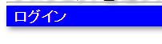
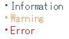

7.11. Message Management¶
Table of contents
Message refers to a fixed text on the screen (such as item title) or an error message.
Fixed text on the screen can be directly embedded in JSP if there is no requirement for internationalization.
Tip
Messages should be defined individually defined and not simply used in common.
The below problems are likely to occur if the messages are simply used in common.
For example, suppose a message is used because there is a message that can be used from the messages of another business. If the message is changed due to change in the specifications of other business, then a message irrelevant to the place where the message is being used, will be displayed.
7.11.1. Function overview¶
7.11.1.1. Location to define the message can be specified¶
Messages can be managed in a database or property file. The properties file is used for management by default.
Below are the reasons for configuring the properties file as default.
When managed by the property file, additions, changes and confirmations of messages is easy. For example, when adding to messages, adding a line in the property file is easier than inserting in a database.
Refer below for details on managing with the property file.
Tip
Irrespective of where the message is defined, a function is not provided to update the message while the application is running. The application has to be restarted for messages to be updated.
7.11.1.2. Messages can be formatted¶
Messages are formatted with the extension function of java.text.MessageFormat. If the value stored during runtime is to be embedded in the message, a pattern string is defined according to Use pad characters.
7.11.2. Module list¶
<dependency>
<groupId>com.nablarch.framework</groupId>
<artifactId>nablarch-core</artifactId>
</dependency>
<dependency>
<groupId>com.nablarch.framework</groupId>
<artifactId>nablarch-core-message</artifactId>
</dependency>
<!-- Only when managing messages in the database -->
<dependency>
<groupId>com.nablarch.framework</groupId>
<artifactId>nablarch-common-jdbc</artifactId>
</dependency>
7.11.3. How to use¶
7.11.3.1. Creation unit of property files¶
Create for each application. Even if only one system is used, if there are internal and consumer applications, separate property files are to be created for each.
By creating for individual applications, there is an advantage of limiting the impact range of the message within the application. (It is possible to proactively prevent the commonly occurring problem, “I did not think it was being used in this application”.)
- Example
- Applications for consumers
- consumer/main/resources/messages.properties
- Applications for employees
- intra/main/resources/messages.properties
7.11.3.2. Defining messages in property files¶
By default, the property file path is classpath:messages.properties.
Message is loaded using java.util.Properties. Since Nablarch assumes that Java6 or higher is used, Unicode conversion (native2ascii) is not required as long as the messages are created in UTF-8.
- Example of property files
Label.user.register.title = User registration screen errors.login.alreadyExist= The login ID entered has already been registered. Enter a different login ID. Errors.login = Login failed. The login ID or password is incorrect. errors.compare.date = For {0}, enter a date after {1}. success.delete.project= Deletion of the project is completed.Deletion of the project is completed. success.update.project= Updation of the project is completed.
7.11.3.3. Multi-lingual support¶
For multilingual messages, prepare a property file for each language and configure the supported languages to PropertiesStringResourceLoader.locales. Note that the language corresponding to the default locale ( Locale.getDefault().getLanguage() ) is not required to be added to the supported languages.
When acquiring the message, the language used is determined by the locale returned by ThreadContext#getLanguage. If the locale can not be acquired from ThreadContext#getLanguage , Locale.getDefault() is used.
- Language configuration to PropertiesStringResourceLoader
An example of configuring
en,zhanddeas the supported languages is shown.<component class="nablarch.core.cache.BasicStaticDataCache" name="messageCache"> <property name="loader"> <!-- Definition of Multilingualized PropertiesStringResourceLoader--> <component class="nablarch.core.message.PropertiesStringResourceLoader"> <!-- Supported languages --> <property name="locales"> <list> <value>en</value> <value>zh</value> <value>de</value> </list> </property> <!-- Default language--> <property name="defaultLocale" value="ja" /> </component> </property> </component> <component name="stringResourceHolder" class="nablarch.core.message.StringResourceHolder"> <!-- Configure BasicStaticDataCache with Multilingualized PropertiesStringResourceLoader--> <property name="stringResourceCache" ref="messageCache" /> </component> <component name="initializer" class="nablarch.core.repository.initialization.BasicApplicationInitializer"> <property name="initializeList"> <list> <!-- Add BasicStaticDataCache to initialize --> <component-ref name="messageCache" /> </list> </property> </component>
- Creating a property file for each language
An example for creating a property file corresponding to the supported language configured in PropertiesStringResourceLoader above is shown.
Create a property file corresponding to the language configured in PropertiesStringResourceLoader. The file name is messages_language.properties.
The property file corresponding to the default locale is created as messages.properties, without entering any language. Note that the process will end with an error if messages.properties does not exist.
main/resources/messages.properties # file corresponding to the default language messages_en.properties # File corresponding to en messages_zh.properties # File corresponding to zh messages_de.properties # File corresponding to de
7.11.3.4. Throws business exception with message¶
Below is an example of throwing a business exception ( ApplicationException ) with the message configured in the property file.
To acquire the message configured in the property file, MessageUtil class is used. Business exception ( ApplicationException ) is generated and thrown based on Message acquired from MessageUtil.
- Property file
errors.login.alreadyExist= The login ID entered has already been registered. Enter a different login ID.
- Implementation examples
Message message = MessageUtil.createMessage(MessageLevel.ERROR, "errors.login.alreadyExist"); throw new ApplicationException(message);
7.11.3.5. Use pad characters¶
Pad characters in the java.text.MessageFormat format are supported. When only Map is specified as the value to be embedded in a message, the extension function which embeds the value based on the key value of Map without using java.text.MessageFormat.
When using pad characters, use pattern characters in the message, and specify the pad characters when acquiring the message.
- When other than Map is used as the pad characters
- Property file
Define messages according to the specifications of java.text.MessageFormat.
Success.upload.project= {0} projects have been registered.
- Implementation examples
When the projects.size() returns 5, the acquired message becomes “5 projects have been registered”.
MessageUtil.createMessage(MessageLevel.INFO, "success.upload.project", projects.size());
- When only Map is used as the embedded characters
- Property file
The pad characters portion is defined by enclosing the key name of Map with
{and}.success.upload.project={projectCount} projects have been registered.
- Implementation examples
Specify Map as the pad character specified when acquiring the message.
When the projects.size() returns 5, the acquired message becomes “5 projects have been registered”.
Map<String, Object> options = new HashMap<>(); options.put("projectCount", projects.size()); MessageUtil.createMessage(MessageLevel.INFO, "success.upload.project", options);
Important
The value that can be set as the pad character is only Map. When multiple Map, or a value other than Map is specified as a set, the value of java.text.MessageFormat is used for padding.
To change the format method of the message, refer and support according to Change how messages are formatted.
7.11.3.6. Acquire fixed screen text from message¶
To output the message value in the fixed text of the screen, use the message tag from the custom tag library.
For detailed usage of the message tag, see Output of messages.
- Property file
# "ログイン" means login. Login.title= ログイン
- JSP
<div class="title-nav"> <span><n:message messageId="login.title" /></span> </div>
- Screen display results
The message defined in the property file is displayed as fixed text.

7.11.3.7. Use different message levels¶
By using different message levels, the style when the screen is displayed can be switched. Style can be switched by using the errors tag from the custom tag library.
Important
The following are the problems when changing the style using message levels and custom tags.
- There is a restriction on the DOM structure output by the custom tag library, which makes it incompatible with general CSS frameworks.
- There are only 3 message levels and further classification is not possible
- Cannot be used with template engines other than JSP.
Therefore, the following implementation method is recommended instead of style switching according to message level using errors tag.
- Server
Message strings are prepared in the server and set in the request scope. As a message level is required when generating a message, it is better to specify the INFO level.
context.setRequestScopedVar("message", MessageUtil.createMessage(MessageLevel.INFO, "login.message").formatMessage());
- View
The message configured in request scope is output in View (JSP etc.). When using JSP, the message configured in the request scope is output using the write.
<div class="alert alert-success" role="alert"> <n:write name="message" /> </div>
- Example of switching the style according to the message level using the errors tag
There are three message levels: INFO, WARN, ERROR, which are defined in MessageLevel.
When errors tag is used, the following css classes are applied according to the message level. For detailed usage of the errors tag, see Performing error display.
INFO: nablarch_info WARN: nablarch_warn ERROR: nablarch_error Tip
All the messages of business exception (ApplicationException) thrown from the Validation function are of the ERROR level.
- Property file
Info= Information warn= Warning error= Error
- Style sheet
Perform style definition corresponding to the message level.
.nablarch_info { color: #3333BB; } .nablarch_warn { color: #EA8128; } .nablarch_error { color: #ff0000; }
- action class
Messages output with errors tags are stored in the request scope using WebUtil.notifyMessages.
WebUtil.notifyMessages(context, MessageUtil.createMessage(MessageLevel.INFO, "info")); WebUtil.notifyMessages(context, MessageUtil.createMessage(MessageLevel.WARN, "warn")); WebUtil.notifyMessages(context, MessageUtil.createMessage(MessageLevel.ERROR, "error"));
- JSP
Messages stored in WebUtil are displayed on the screen using the errors tags.
<n:errors />
- Screen display results
The change in style according to the message level can be noticed.

7.11.4. Expansion example¶
7.11.4.1. Change the property file name and storage location¶
Properties for changing the file name and directory path are provided by PropertiesStringResourceLoader. To change the default configuration, these properties are used to make changes.
7.11.4.2. Manage messages in a database¶
To manage messages in a database, it is necessary to use BasicStringResourceLoader to load the messages.
Below is a configuration example for using a message managed by a database.
<!-- Component that loads messages from the database -->
<component name="stringResourceLoader" class="nablarch.core.message.BasicStringResourceLoader">
<property name="dbManager" ref="defaultDbManager"/>
<property name="tableName" value="MESSAGE"/>
<property name="idColumnName" value="ID"/>
<property name="langColumnName" value="LANG"/>
<property name="valueColumnName" value="MESSAGE"/>
</component>
<!-- Component that caches loaded messages -->
<component name="stringResourceCache" class="nablarch.core.cache.BasicStaticDataCache">
<!-- Loader specifies the class that loads messages from the database -->
<property name="loader" ref="stringResourceLoader"/>
<!-- Load all at startup -->
<property name="loadOnStartup" value="true"/>
</component>
<!--
Component that holds the character resource that is the source of the message
Component name must be stringResourceHolder
-->
<component name="stringResourceHolder" class="nablarch.core.message.StringResourceHolder">
<!-- Specify the components that cache messages-->
<property name="stringResourceCache" ref="stringResourceCache"/>
</component>
7.11.4.3. Change how messages are formatted¶
The formatting method of messages can be changed by creating an implementation class of MessageFormatter and defining the component.
An example is shown below.
- Implementation class of MessageFormatter
package sample; import nablarch.core.message.MessageFormatter; public class SampleMessageFormatter implements MessageFormatter { @Override public String format(final String template, final Object[] options) { return String.format(template, options); } }
- Component configuration file
Set the component name as
messageFormatterand configure the implementation class for MessageFormatter.<!-- Define the component name as a messageFormatter. --> <component name="messageFormatter" class="sample.SampleMessageFormatter" />
Also, the following classes are provided for the implementation of MessageFormatter.
- BasicMessageFormatter:
- Format the message in accordance with pad character specifications. This class is used if the implementation class of MessageFormatter is not defined as a component.
- JavaMessageFormatBaseMessageFormatter:
- Format the message using MessageFormat.